Pintura interna
Paredes e tetos com acabamento super fino, prontos para luz embutida e sanca de LED.
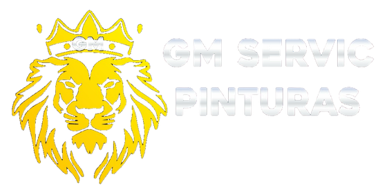
Pintura interna, revestimentos aplicados e fachada, feitos com a melhor tecnologia em máquinas, do preparo da superfície à última demão.
O recado é curto e vem direto de quem vai estar lá com o rolo na mão.
O padrão GM
Acabamento super fino não é uma demão a mais. É a superfície chegar lisa antes da tinta, e é máquina que faz isso por igual, sem poeira e sem onda.
Lixadeira de teto e parede com aspiração acoplada: o pó sai na hora, não assenta na obra.
Massa corrigida e lixada por igual, sem marca de emenda nem sombra quando a luz bate de raspão.
Pintura e revestimentos aplicados pela mesma equipe, do preparo à entrega.
Três frentes, uma equipe só. O mesmo padrão de preparo vale para dentro, para fora e para o revestimento.
Paredes e tetos com acabamento super fino, prontos para luz embutida e sanca de LED.
Grafiato, textura e revestimento 3D aplicados no desenho que o projeto pede.
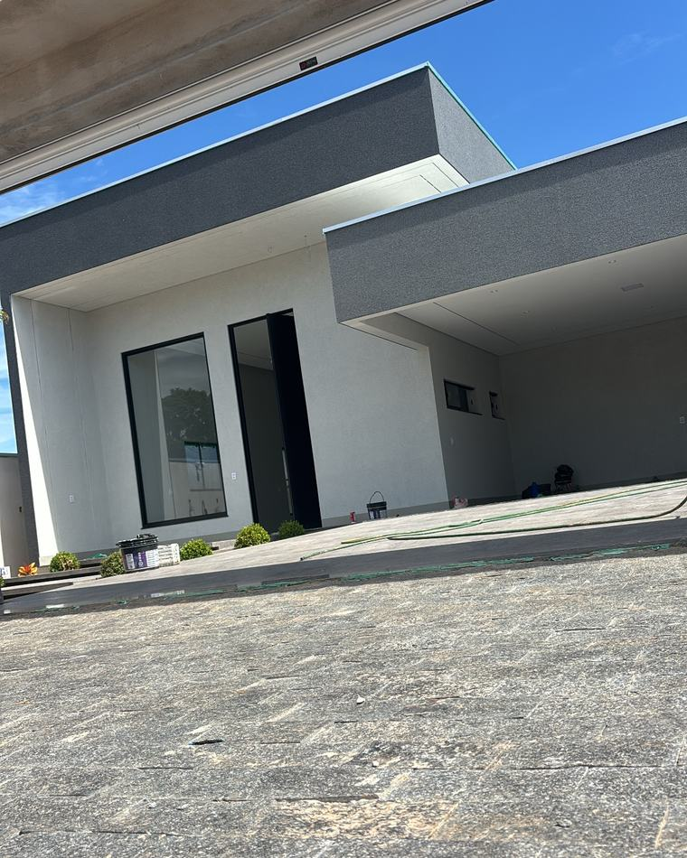
Pintura externa e textura na fachada, com o acerto de cor que a arquitetura pediu.
Na obra, não no catálogo
Revestimento aplicado e curado como o fabricante manda. A parede recebe água direto da mangueira e continua seca por dentro.
É uma amostra do que sai da obra, não a lista completa. Se o que você precisa não está aqui, pergunta no WhatsApp.
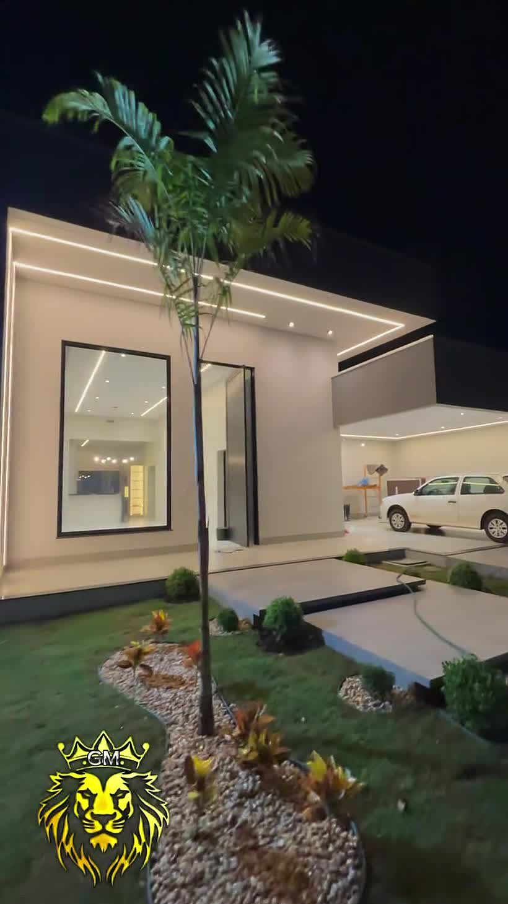
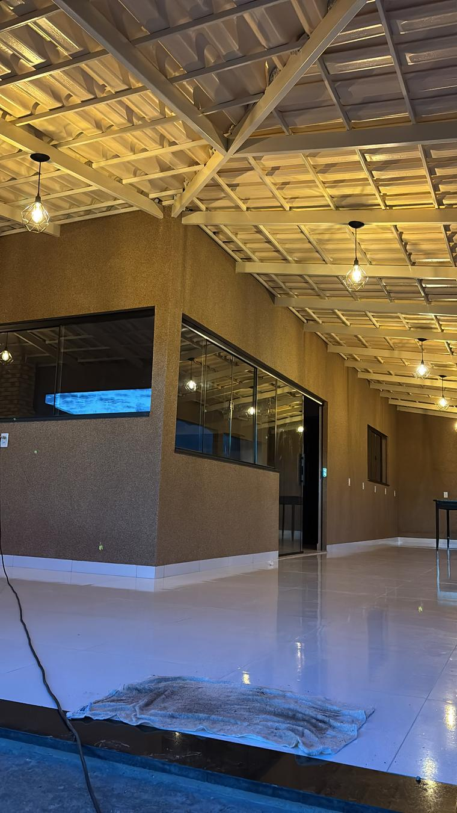
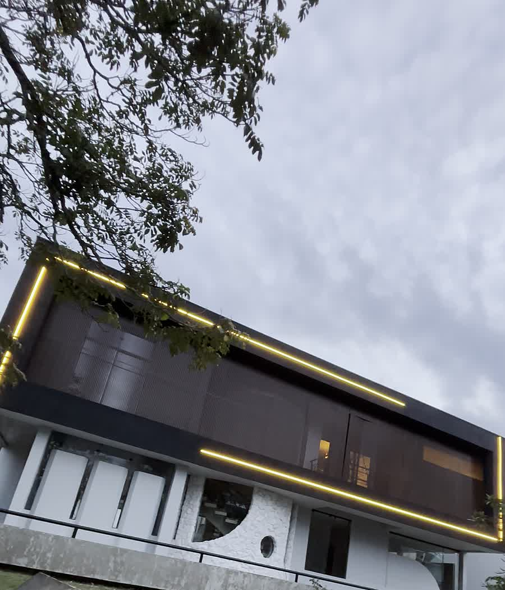
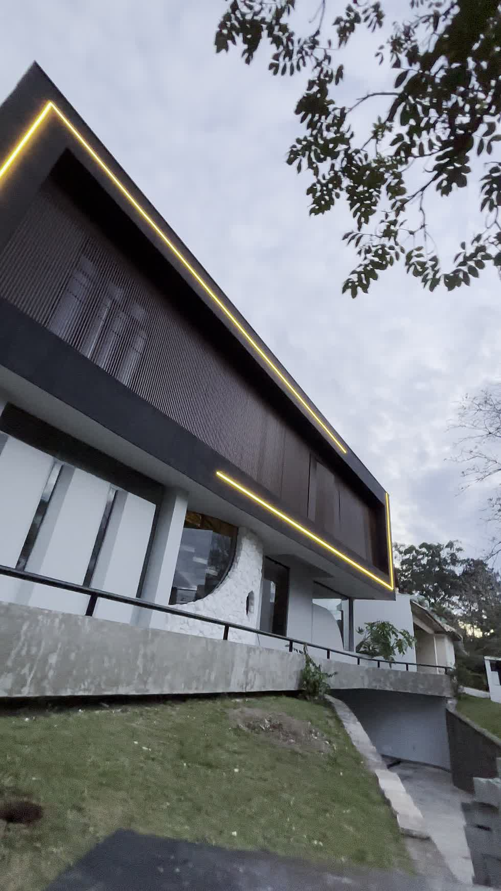
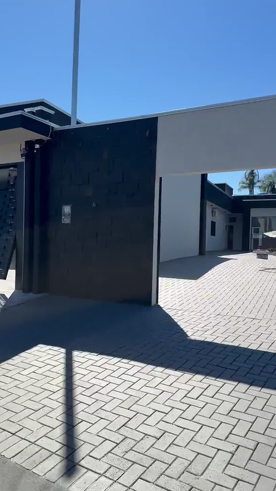
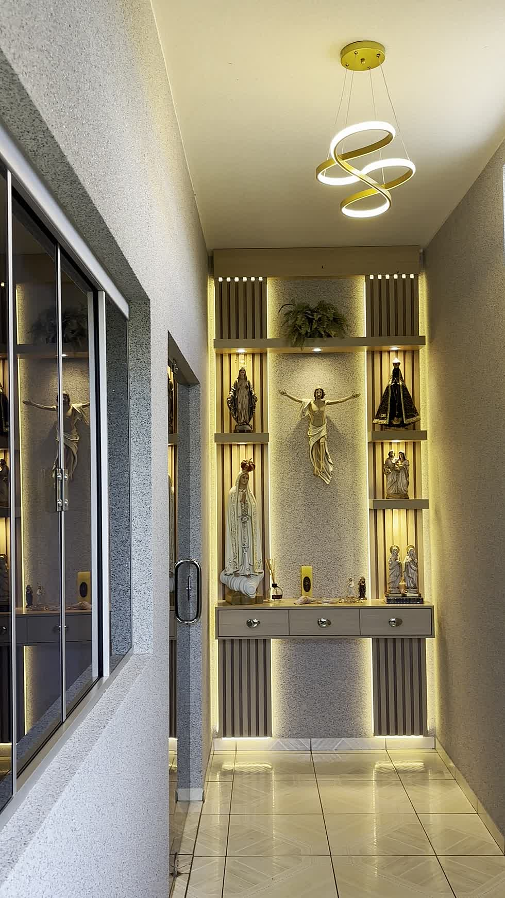
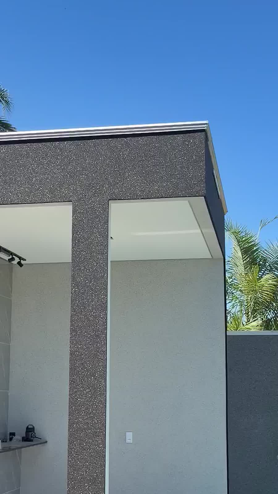
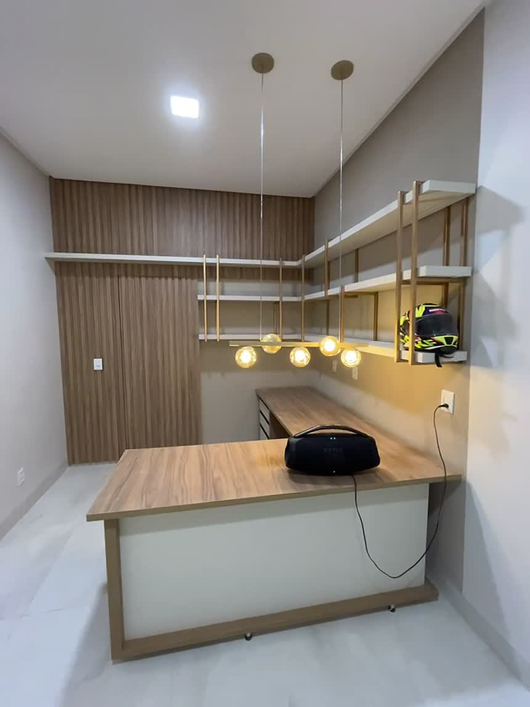
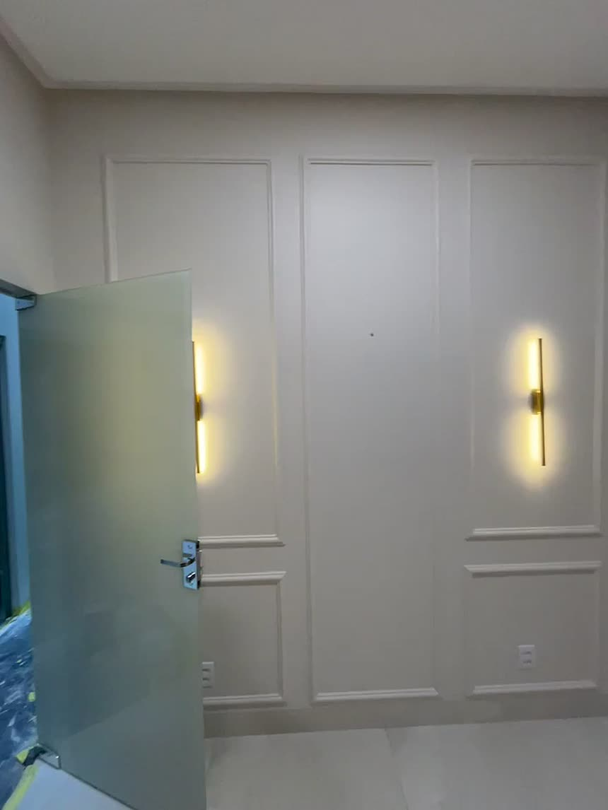
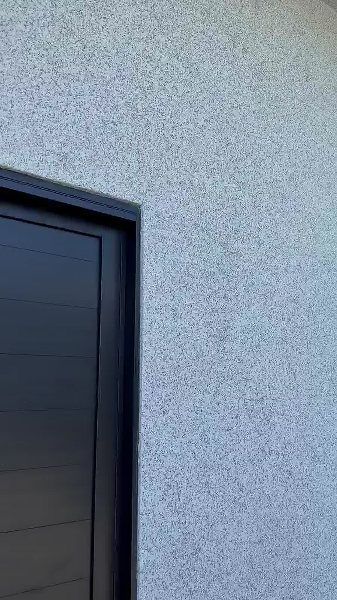
Manda o endereço da obra, a metragem e umas fotos. A gente responde com o que dá para fazer e quando dá para começar.